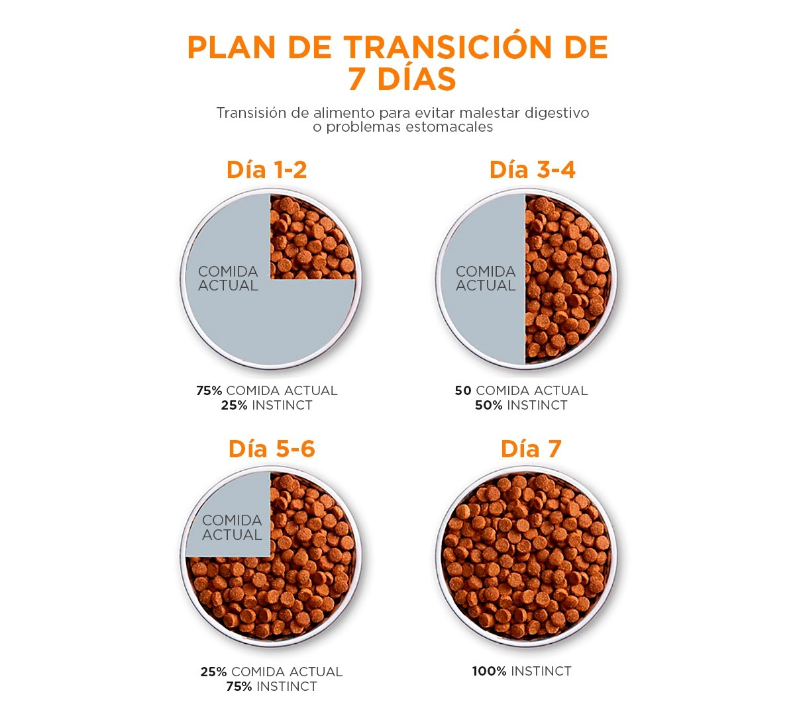
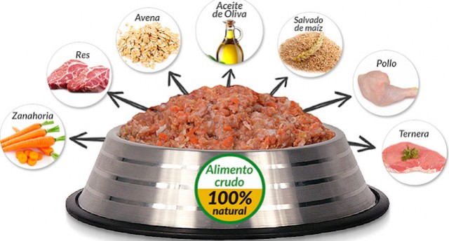
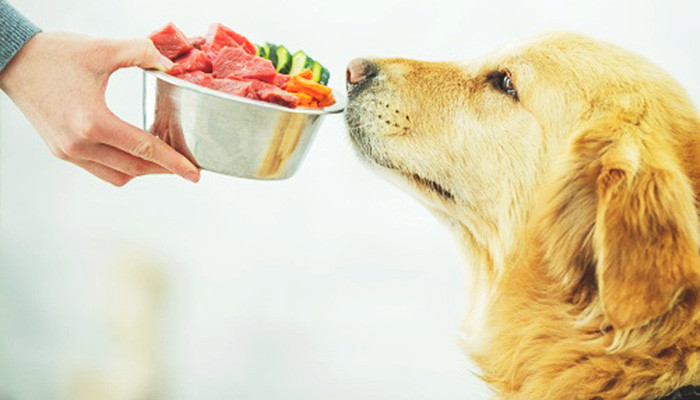
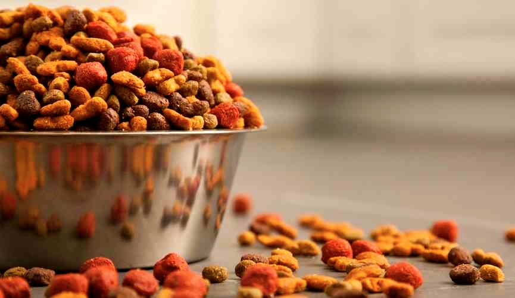
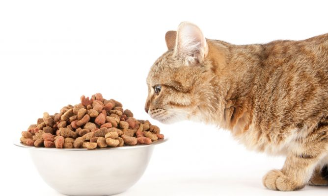
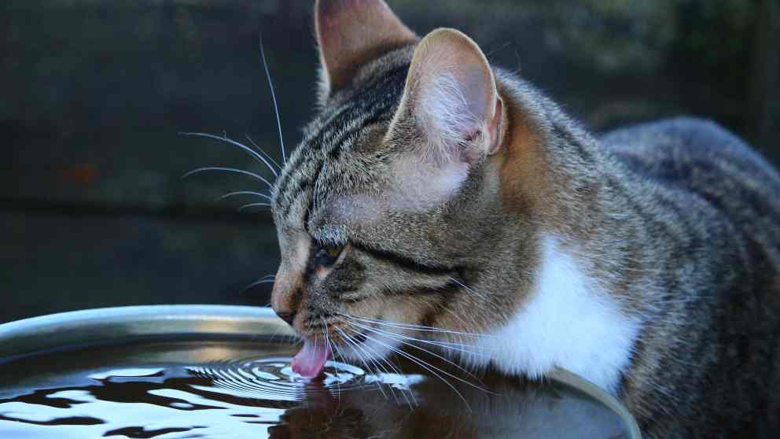
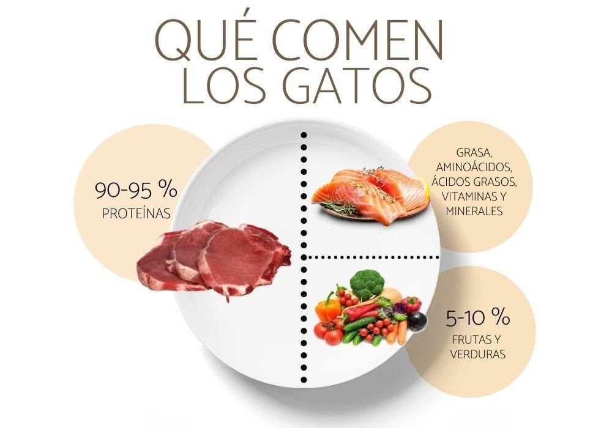

Cuidados
Cuidados para Perros
¿Cómo alimentar a tu perro correctamente?

Cada perro es diferente y necesita unos nutrientes y proteínas distintos del otro. Su raza, su edad y tamaño, su actividad y su estilo de vida son factores que influirán directamente a la hora de elaborar una dieta equilibrada para él. Además, la alimentación de nuestra mascota depende exclusivamente de nosotros, y eso (aunque parezca obvio), supone una gran responsabilidad.
La hidratación es indispensable

La hidratación en los perros, de la misma forma que nosotros, es muy importante. La relación promedio de agua que necesitan es de 60ml por kilo de peso corporal. Esta cantidad deberá aumentar en el caso de tratarse de un cachorro, una hembra lactante, un clima muy cálido o si ha realizado actividad física. No olvides cambiarle el agua regularmente, ya que de lo contrario es probable que se alojen bacterias perjudiciales para su salud.
Respetar sus transiciones alimentarias
Si, por cualquier motivo, cambias un alimento por otro, es recomendable que lo hagas poco a poco y progresivamente. Dosifica ambos productos durante una semana y ve aumentando la dosis del nuevo alimento hasta cambiarlo por completo. De esta forma, ayudarás a tu peludo a adaptarse a los nuevos sabores y a digerirlos con facilidad. Así su metabolismo podrá acostumbrarse y se reducirá el rechazo o los problemas digestivos.
Controla la cantidad de alimento

Si pudieses medir y pesar de alguna forma la cantidad de comida que das a tu peludo sería ideal. En tal caso, la cantidad adecuada se calcula en función de la necesidad energética diaria y el peso del animal. Razas medianas-grandes: 3% de su peso. Un animal de 20kg va a necesitar 600gr de comida al día. Razas pequeñas: 4-5% de su peso. Un animal de 5kg va a necesitar entre 200 y 250gr de comida al día. Controlando las cantidades de alimento que proporcionas a tu peludo le ayudarás a prevenir enfermedades como la obesidad, que provoca muchas otras complicaciones de salud.
Alimentación equilibrada
Es importante que los alimentos que ingiera tu pequeño contengan todos los nutrientes en las cantidades adecuadas en relación a su peso y a su tamaño, su estado fisiológico, su edad e incluso su estado de salud. Los perros tienen que consumir una dieta que contenga todos los nutrientes necesarios para su correcto desarrollo. Asegúrate de que los alimentos que ofreces a tu peludo tengan proteínas, minerales, hidratos de carbono, grasas, vitaminas y antioxidantes.
No alimentar de mala manera
Es importante que dejes de creer que tu mascota necesita una alimentación parecida a la de los humanos, o que puedes darle sobras de tu comida, ya que esos alimentos no satisfacen sus necesidades alimenticias, y además son perjudiciales para su salud.
Cuida la higiene de los alimentos
Es también muy importante garantizar la sanidad de los alimentos. Normalmente, los productos comerciales como el pienso no tienen problemas para mantener la higiene, siempre y cuando estén correctamente cerrados y en lugares secos y protegidos de la luz. En el caso de ser enlatados, frescos o descongelados se pueden conservar en frío durante un período corto de tiempo. En el caso de que sobre comida, ya sea seca o húmeda, retira los restos y limpia su plato a diario. De esta forma evitarás las bacterias y mantendrás los alimentos de tu peludo en buenas condiciones.
Cuidados para Gatos
Alimentación para Gatos
El volumen de comida dependerá de factores como el tamaño, metabolismo y/o estilo de vida de cada gato pero la cantidad diaria debería oscilar entre los 30 y 40 gramos para un gato de dos kilos de peso hasta los 85 gramos para un gato adulto de unos 6/7 kilos. Esta cantidad deberá repartirse entre todas las tomas que el minino haga al día, que pueden oscilar entre las 3/4 raciones para un gato de menos de seis meses y dos para uno mayor.
Una buena hidratación
Se recomienda disponer no de uno sino de varios bebederos por la casa, evitando colocarlos junto a la comida, o si es así, evitando que sea este la única fuente disponible para aumentar la ingestión de líquidos. Tambien es recomendable suministrar a los gatos alimento húmedo al menos una vez por semana.
Como cambiar la alimentación de un gato
Al igual que ocurre con los perros, el cambio de alimento en gatos deberá hacerse de forma progresiva. Por regla general, se recomienda introducir el nuevo alimento gradualmente a lo largo de 7 ó 10 días. La idea es ofrecerle la nueva comida a la vez que la antigua e ir reduciendo cada vez más la cantidad de antigua.
Buena alimentacion
Los felinos toman como fuente de energía principal las proteínas y necesitan mayores cantidades de éstas que las que necesitan los perros. La carne no es sólo fuente de proteínas, sino que también aporta tres nutrientes esenciales para los gatos: la taurina (para el corazón y la vista), el ácido araquidónico (para la salud de la piel y el pelaje) y la vitamina A (para el pelaje y la vista).
No darle de comer nuestras sobras

Los gatos son delicados y cualquier error los puede enfermar, muy probablemente presentarán carencias e incluso pueden provocarles trastornos digestivos.
Mantenimiento de la comida

Se recomienda conservar el alimento en un lugar seco y seguro como por ejemplo un recipiente hermético. Si hay varios gatos en casa insisten también en la importancia de proporcionar un comedero a cada uno de ellos.